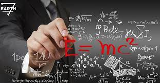
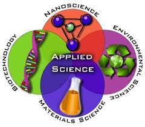
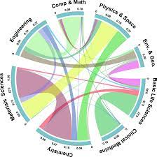

Science is a rigorous, systematic endeavor that builds and organizes knowledge in the form of testable explanations and predictions about the world.
Science has no single origin. Rather, systematic methods emerged gradually over the course of tens of thousands of years,[39][40] taking different forms around the world, and few details are known about the very earliest developments. Women likely played a central role in prehistoric science,[41] as did religious rituals.
Natural science is the study of the physical world. It can be divided into two main branches: life science and physical science. These two branches may be further divided into more specialized disciplines. For example, physical science can be subdivided into physics, chemistry, astronomy, and earth science. Modern natural science is the successor to the natural philosophy that began in Ancient Greece. Galileo, Descartes, Bacon, and Newton debated the benefits of using approaches which were more mathematical and more experimental in a methodical way. Still, philosophical perspectives, conjectures, and presuppositions, often overlooked, remain necessary in natural science.
Formal science is an area of study that generates knowledge using formal systems.[152][6][7] A formal system is an abstract structure used for inferring theorems from axioms according to a set of rules.[153] It includes mathematics,[154][155] systems theory, and theoretical computer science. The formal sciences share similarities with the other two branches by relying on objective, careful, and systematic study of an area of knowledge. They are, however, different from the empirical sciences as they rely exclusively on deductive reasoning, without the need for empirical evidence, to verify their abstract concepts.
Applied science is the use of the scientific method and knowledge to attain practical goals and includes a broad range of disciplines such as engineering and medicine.[164][14] Engineering is the use of scientific principles to invent, design and build machines, structures and technologies.[165] Science may contribute to the development of new technologies..
Interdisciplinary science involves the combination of two or more disciplines into one,[173] such as bioinformatics, a combination of biology and computer science[174] or cognitive sciences. The concept has existed since the ancient Greek and it became popular again in the 20th century.[175].
